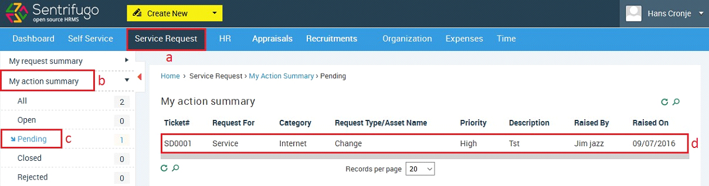

Service Request
Service Request provides access to key services and information which are required by the employees. Configure the service request workflow without coding or scripting. You can raise and handle service requests. Below is the service request process flowchart.
Description:
- A User (Any User who has a reporting manager) raises a service request.
- The Executor(s), Viewer(s) and the User will receive an email notification.
- The Executor has 3 options:
- He/she can execute and close the service request
- Request for Management approval>
- Request for User’s manager’s approval
- The actual execution takes place offline
- If the Executor has requested for either User’s Reporting Manager or Management’s approval, then the request will only be closed once one/both of them have approved. The Reporting Manager or Management will receive an email notification if an approval is sought from them by the executor(s).
How do I create Service Request Categories?
- Click Service Request in the top menu
- Click Configuration on the left menu panel
- Click Categories in the submenu
- Click +Add button on the right side
- Enter the Required details
- Click SAVE button
How do I create Service Request Types?
- Click on the Service Request in the top menu
- Click Configuration on the left side panel
- Click Request Type submenu
- Click +Add button on the right side
- Enter the Required details
- Click ADD NEW REQUEST to add more requests in the same category
- Click SAVE button
How do I configure Service Request settings?
- Click Service Request in the top menu
- Click Configuration left menu panel
- Click Settings in the submenu
- Click +Add button on the right side
- Enter the Required details
- Click Click SAVE button button
Who are Approvers, Executors and Viewers?
Approvers: *Management*: They are responsible for providing approval for service requests. Executor(s) send a request for approval to the Approver(s). You can have a maximum of 3 approvers and a minimum of 1 approver.
Executors:*All roles except Management*: They are responsible for executing the service request. The actual execution takes place offline. You can have any number of executors.
Request Viewers: *All roles except Management*: They don’t have any responsibility in the service request process. They can only view the actions taken by the executors and approvers via email notifications. You can have any number of viewers.
How do I raise a Service Request?
- Click Service Request in the top menu
- Click My request summary on the left side panel
- Click +Add button on the right side
- Fill in the required details
- Click SAVE button
How do I view my Service Requests?

- Click Service Request in the top menu
- Click My request summary on the left menu panel
Service Requests have been categorized on basis of their statuses:
- All
- Open
- Closed
- Rejected
- Cancelled
- Click on the category you would like to view.
- Number of tickets present in each category
- Click on any ticket record to view the details
- You can view the service request history here
- Click BACK to return to the service request grid
How do I execute a Service Request?
If you have been configured as the executor or one of the executors for a service request category, then you will receive an email when an employee raises a request (Provided the executor and employee belong to the same Business Unit).
- Click Service Request in the top menu
- Click My action summary on the left menu panel
- Click Open in the submenu
- Click on any ticket record to view the details

The actual execution takes place offline.
- Click Close requestbutton to approve/reject the request.
- (e1) Select an action (Approve/Reject)
- (e2) Provide comments.
- Request Management Approval for the service request (They will be the approver(s) selected while configuring the Service Request Settings)
- Request Manager Approval for the service request (The employee’s reporting manager)
- Click SUBMIT button
Requests can be closed at any point by the executor, except when Management/Manager approval is pending
How do I approve a Service Request as Management (Approver)/Manager?
- Click Service Request in the top menu
- Click My Action Summary on the left side panel
- Click To approve in the submenu
- Click on any ticket record to view the details
- Select any action (Approve/Reject)
- Provide comments
- Click SUBMIT button
- Click BACK button to return to the service request grid
How do I close a Service Request as an Executor?
If you have requested for approval from either the Management (Approver)/Manager, you will receive an email notification when they take an action.

- Click Service Request in the top menu
- Click My action summary on the left menu panel
- Click Pending in the submenu
- Click on any ticket record to view the details
- Select an action (Approve/Reject)
- Provide comments.
- Click SUBMIT button